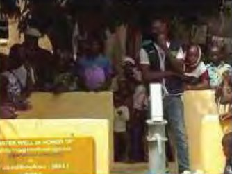

The Ocean Story
A two-year global photography project documenting how plastics and overfishing affect the ocean, with YFC as founding sponsor.
Read the full story
The need Nine endangered marine species threatened by overfishing, ocean warming and plastic pollution.
YFC's role Founding sponsor.
Partners Photographer Vincent Kneefel.
Action A two-year global project telling the stories of nine endangered marine species.
Outcome Award-winning photographs, featured in the UN Decade of the Ocean Calendar 2022/2023. The project is now in its second edition.
Evidence The published photographs and calendar feature.
Next step Organisations can support future editions and awareness events.

A water well in Mali
YFC sponsored the construction of a water well in Mali, Africa. The community now has access to clean water.
Read the full story
The need A community without reliable access to clean water.
YFC's role Sponsor of the well's construction.
Action Construction of a water well in Mali, Africa.
Outcome The community now has access to clean water.
Evidence Project photographs of the completed well.
Next step Support further clean-water projects.
League of Extraordinary Schools
With LACNOR and the Dubai Health Authority, YFC reached 14 schools across Dubai.
Read the full story
The need Inspiring young people to embrace environmental consciousness, lead healthier lives and sharpen critical thinking in the digital age.
YFC's role Programme collaborator.
Partners LACNOR and the Dubai Health Authority.
Action The LACNOR League of Extraordinary Schools programme.
Outcome 14 schools across Dubai took part.
Evidence Participating school records and event photographs.
Lake Tanganyika Floating Health Clinic
YFC supported a floating clinic that has served communities around Lake Tanganyika for more than five years.
Read the full story
The need Healthcare access for remote communities on Lake Tanganyika.
YFC's role Supporter.
Partners The Lake Tanganyika Floating Health Clinic (LTFHC).
Action Support for the clinic's work with local communities.
Outcome Continued care from a clinic that has helped local communities for over five years.
Evidence Partner reporting from LTFHC.
Next step Support healthcare access initiatives.
One Young World 2023 Summit
YFC sponsored Wangechi Kuria as a delegate to the One Young World 2023 Summit in Belfast.
Read the full story
The need Opportunities for impactful young leaders to develop and connect.
YFC's role Delegate sponsor.
Partners One Young World and delegate Wangechi Kuria.
Action Sponsorship to attend the 2023 Summit in Belfast.
Outcome A young leader joined delegates from around the world at the summit.
Evidence Summit attendance and photographs.
Next step Support youth leadership opportunities.
Mara Trails Exhibition
YFC sponsors Paws Trails exhibitions, which bring artists together to be the voice of the vanishing world.
Read the full story
The need Awareness of wildlife conservation and the species we are losing.
YFC's role Sponsor.
Partners Paws Trails, an organisation dedicated to wildlife conservation.
Action The Mara Trails exhibition, a platform for known and upcoming artists.
Outcome Art that gives nature a voice and reaches new audiences.
Evidence Exhibition record and photographs.
Next step Partner with us on future awareness events.